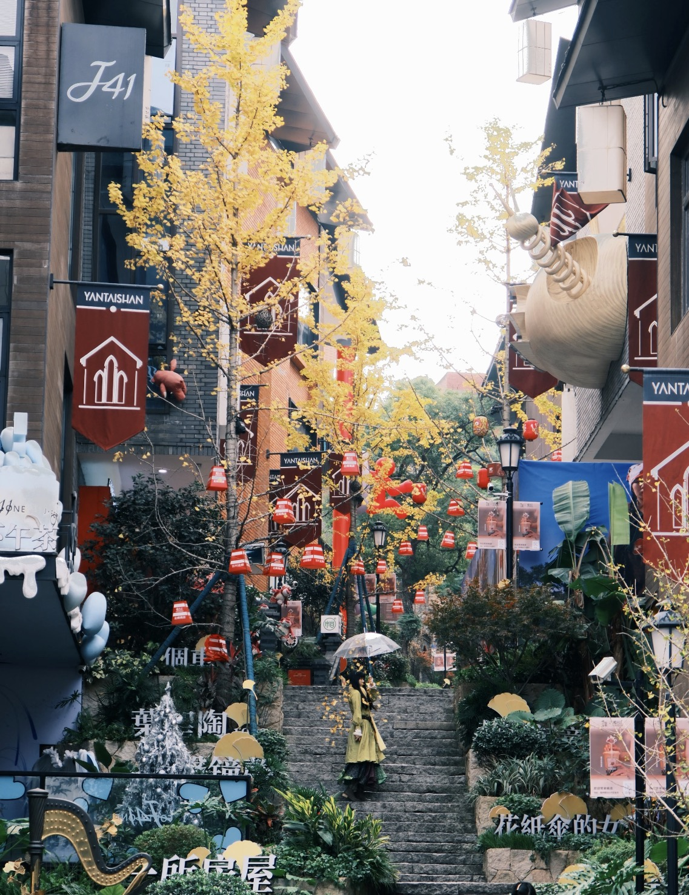

古韵与绿意
三坊七巷寻古韵，福道穿林揽绿意，闽江畔吹晚风。第一天的主题是「慢」。
壹
全天 约10小时
坊巷漫步 · 空中步道 · 闽江夜景
三坊七巷 → 福道 → 青年广场 & 闽江夜景
+
🚌 公交约30分钟 / 🚕 打车约15元 → 福道3号入口（梅峰山地公园）
🚕 打车约20元（15分钟）→ 青年广场 / 🚌 公交至闽江公园站
山海之间
登鼓山望东海，探马尾船政风云，夜游百年商埠上下杭。第二天走得更远、看得更深。
贰
全天 约11小时
鼓山登高 · 船政风云 · 百年商埠
鼓山涌泉寺 → 船政文化景区 → 上下杭
+
🚕 打车约¥30（20分钟）→ 马尾区船政文化景区
🚌 公交约40分钟 / 🚕 打车约¥35 → 上下杭历史文化街区
如果还有一天
时间充裕的话，这三个方向各具特色：古镇底蕴、万国建筑、赶海踏浪。

古镇底蕴
螺洲古镇 —— 帝师之乡
清代帝师陈宝琛故里，田螺姑娘传说发源地。孔庙、陈氏五楼、螺洲温泉——距市区仅15公里，地铁5号线直达。

万国建筑
烟台山 —— 福州版「鼓浪屿」
五口通商遗留的17国领事馆、洋行、教堂——石厝教堂的银杏和老洋房的爬山虎构成独特的万国建筑博物馆。

海滨渔村
连江 / 罗源 —— 赶海踏浪
滩涂赶海（挖蛤蜊捉螃蟹）、罗源湾海洋世界（白鲸海豚¥180）、贵安温泉（¥168起）、码头海鲜大排档。
行程贴士
让你的福州之行更加顺畅的小细节。
防晒与补水
福州夏季长且炎热（5-10月），体感温度常超35°C。务必涂防晒、戴帽子，每天至少喝2L水。
穿运动鞋是刚需
福道镂空钢架、烟台山坡道、上下杭石板路——薄底鞋、高跟鞋是对自己脚的不尊重。
老字号营业时间
很多老店下午2-4点休息，卖完即关门。建议上午11点前或下午5点后前往。
必备APP
「e福州」扫码乘地铁9折；「大众点评」看餐厅评价；「高德地图」步行导航在福州比百度更准。
茉莉花茶伴手礼
福州是世界茉莉花茶发源地。上下杭和南后街茶庄可试饮后购买，推荐「春伦」或「中莉」，¥50-150/罐。
语言与沟通
福州话（闽东语）非常难懂，但市区内普通话完全通用。一句「丫霸」（很棒）可以拉近距离！